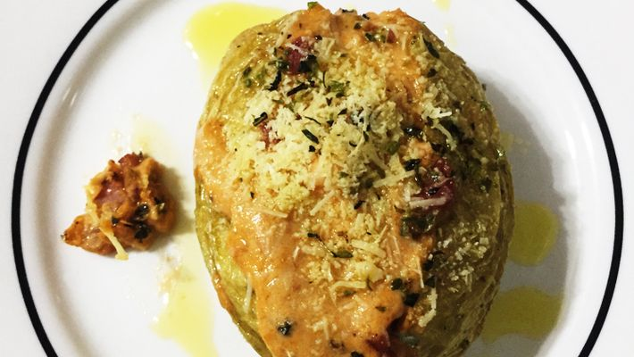

Baum, tu clicou na receita da batata recheada
bora lá
Você vai precisar dos seguintes ingredientes:
- 2 batatas médias cozidas
- sal a gosto
- pimenta-do-reino a gosto
- 1 ovo
- 180 g de queijo mussarela
- bacon frito a gosto
- 1/2 lata de creme de leite
- cebolinha a gosto
Vamos para o passo-a-passo
- Retire a polpa das duas batatas cozidas, deixando uma cavidade em cada uma, reserve.
- Em um recipiente, misture as polpas da batata com sal, pimenta, ovo, queijo mussarela, bacon frito e creme de leite, misture bem
- Em um tabuleiro, coloque as duas batatas e distribua em cada cavidade um pouco de queijo mussarela, a mistura das polpas, bacon frito, mais um pouco de queijo mussarela por cima, bacon e finalize com cebolinha picada a gosto.
- Leve ao forno (230° C), por cerca de 20 minutos.
Volte para a página inicial aqui!